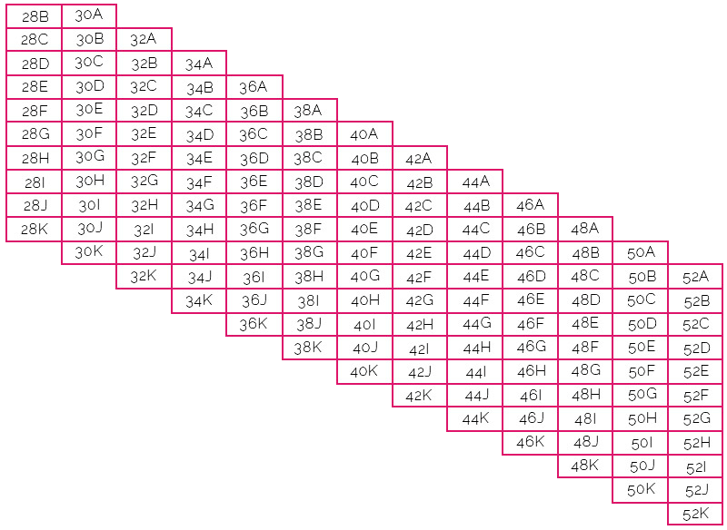

Bras

To measure your BAND size, measure just above your bust by bringing a measuring tape across your back at band level, under each arm (with your elbows down) and back around the front to snugly but comfortably line up with where your bra straps meet your cups. If you measure an odd number or on the half inch round down to the nearest even number.
To measure your BUST, measure across the fullest part of your bust by threading a measuring tape across your back at band level, under your arms (with your elbows down) and that the tape isn't pulled away from the body in the front. With the tape in position, take a breath in and out, allowing it to slide to its most comfortable, non-binding fit. If the measurement falls on the half inch, round up.
Input your measurements!
Band Measurement:
Bust Measurement:
Your Sizes!
